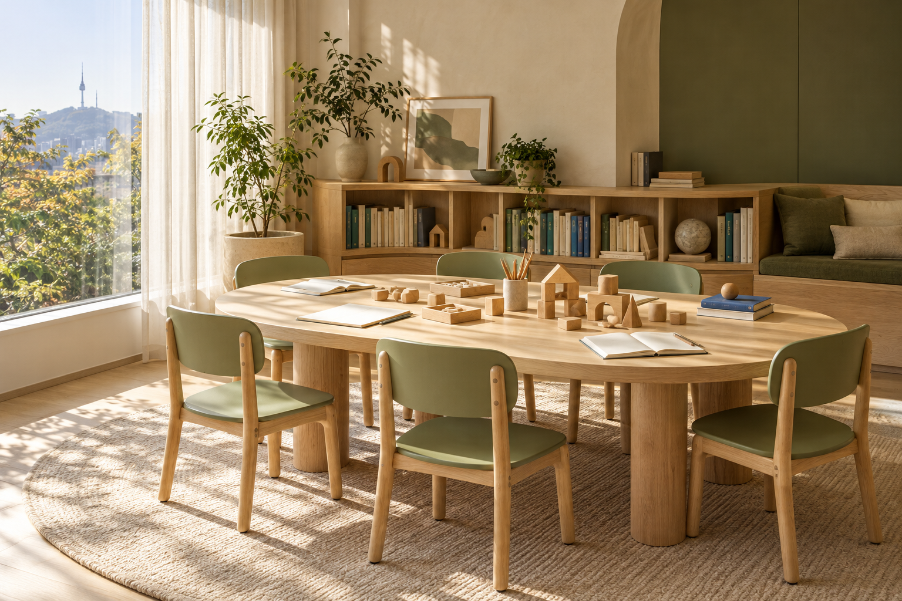

씨앗결 발견하는 읽기
그림책 속 장면을 관찰하고, 나만의 질문을 말로 꺼냅니다.
수업 내용 살펴보기
장면 관찰 · 이야기 놀이 · 한 문장 표현
예시 주제: 그림책의 마지막 장면이 달라진다면?
읽고, 말하고, 손으로 만드는 시간.
우리 아이만의 관점을 발견합니다.

생각이 만나는 공간 ↗START HERE우리 아이의학년별 관심과 표현 방식을 고려한 세 가지 과정.
첫 만남에서 읽기 경험과 관심사를 함께 살펴봅니다.
그림책 속 장면을 관찰하고, 나만의 질문을 말로 꺼냅니다.
장면 관찰 · 이야기 놀이 · 한 문장 표현
예시 주제: 그림책의 마지막 장면이 달라진다면?
같은 이야기를 다르게 읽고, 친구의 생각과 내 생각을 연결합니다.
근거 찾기 · 교구 탐구 · 대화 기록
예시 주제: 같은 모양으로 다른 이야기를 만들 수 있을까?
책에서 만난 질문을 생활로 가져와, 내 의견을 글과 프로젝트로 펼칩니다.
관점 비교 · 주제 토론 · 생각 글쓰기
예시 주제: 우리 동네에 필요한 공간은 무엇일까?
교육과정은 가상 브랜드의 기획 예시이며, 실제 개설 과정·정원·시간표는 운영 기관 확인이 필요합니다.
학년과 관심사를 알려주세요.
함께 살펴볼 과정과 첫 만남에서
나눌 이야기를 정리해 드립니다.
과정 탐색용 데모입니다. 예약이나 신청이 접수되지 않으며,
이름·연락처 등 개인정보를 받지 않습니다.
한 가지 질문이 책에서 시작해
아이의 말과 손끝, 글로 이어지는 수업.
그림책 속 같은 장면을 천천히 살펴보고, 눈에 들어온 것을 말합니다.
‘왜 그렇게 생각했을까?’ 친구의 근거를 듣고 내 질문을 더합니다.
나무 도형으로 장면을 바꾸어 만들며 다른 가능성을 탐구합니다.
오늘 달라진 생각을 짧은 글이나 그림으로 배움노트에 기록합니다.
함께 둘러앉는 책상, 손에 닿는 책과 교구.
정해진 답을 향해 일렬로 앉는 대신,
서로의 표정과 생각을 마주합니다.
브랜드 공간을 제안하는 AI 생성 이미지입니다.
질문결은 책과 대화, 손으로 하는 탐구를 잇는
작은 배움학원입니다.
한 아이의 질문을 서두르지 않고 듣습니다.
서로 다른 생각을 만나고, 자기 언어로 표현하는 시간.
그 시간이 쌓여 아이만의 생각의 결이 됩니다.
아이의 생각을 가까이에서 읽는
질문결의 작은 배움노트.
첫 만남에서 읽기 경험과 흥미를 듣고 과정을 함께 살펴봅니다. 짧은 장면 읽기나 그림 관찰부터 시작하는 활동도 과정 기획에 포함됩니다. 실제 참여 여부와 수업 방식은 운영 기관 상담으로 확인해 주세요.
학년은 과정 탐색을 위한 시작점입니다. 아이의 읽기 경험, 대화 참여 방식, 관심 주제 등을 살펴본 뒤 적합한 과정을 안내하도록 기획했습니다.
수업의 질문과 활동, 아이가 남긴 기록을 바탕으로 배움의 흐름을 공유하는 방식을 제안합니다. 안내 주기와 방식은 실제 운영 시 확정합니다.
이 사이트는 가상 업체의 디자인 시안입니다. 실제 수업·상담 신청은 제공하지 않습니다. 위의 수업 찾기에서 과정 안내와 상담 준비 메모를 체험할 수 있습니다.